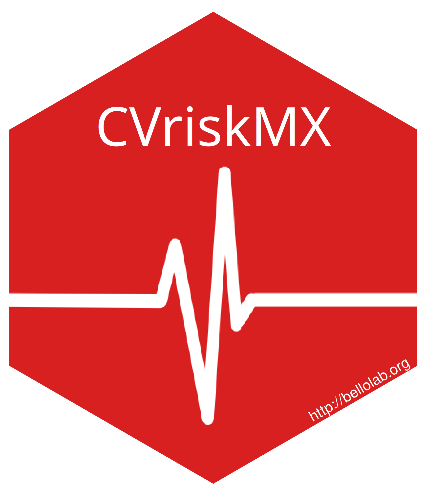

The CVriskMX package includes a set of functions to optimize cardiovascular risk prediction for Mexican adults. This package currently contains a function to estimate recalibrated risk for fatal cardiovascular disease using Globorisk (The Lancet Regional Health - Americas, 2026).
For clinical use consider the ShinyApp: https://antonio-villa-lab.shinyapps.io/CKD_RISK_APP/
AuthorsOmar Yaxmehen Bello-Chavolla, Daniel Ramírez-García, Neftali Eduardo Antonio-Villa https://bellolab.org Instituto Nacional de Geriatría, Mexico City, Mexico Instituto Nacional de Cardiología Ignacio Chávez, Mexico City, Mexico |
 |
Installation
You can install the development version of CVriskMX from Github
# install.package("remotes") #In case you have not installed it.
remotes::install_github("oyaxbell/CVriskMX")Alternatively, you will soon be able install the released version of CVriskMX from CRAN with:
# not approved yet
# install.packages("CVriskMX")Example
To calculate the recalibrated version of Globorisk for Mexican population use the globorisk_recalib() function. The following code provides an example for a calculation for males and femaled. The function can also be used to calculate risk in a large cohort.
library(CVriskMX)
## Male example
risk1 <- globorisk_recalib(
sex = 0, # 0 = male
age = 50,
sbp = 120,
tcol_mmol = 5.2,
diab = 0, # no diabetes
smoke = 1 # smoker)
risk1
## Female example
risk2 <- globorisk_recalib(
sex = 1, # 1 = female
age = 60,
sbp = 140,
tcol_mmol = 6.0,
diab = 1, # diabetes
smoke = 0 # non-smoker)
risk2References
Hajifathalian K, Ueda P, Lu Y, Woodward M, Ahmadvand A, Aguilar-Salinas CA, Azizi F, Cifkova R, Di Cesare M, Eriksen L, Farzadfar F, Ikeda N, Khalili D, Khang YH, Lanska V, León-Muñoz L, Magliano D, Msyamboza KP, Oh K, Rodríguez-Artalejo F, Rojas-Martinez R, Shaw JE, Stevens GA, Tolstrup J, Zhou B, Salomon JA, Ezzati M, Danaei G. A novel risk score to predict cardiovascular disease risk in national populations (Globorisk): a pooled analysis of prospective cohorts and health examination surveys. Lancet Diabetes Endocrinol. 2015 May;3(5):339-55. doi: 10.1016/S2213-8587(15)00081-9. Epub 2015 Mar 26. PMID: 25819778; PMCID: PMC7615120.
Perezalonso-Espinosa J, Ramírez-García D, Díaz-Sánchez JP, Carrillo-Herrera KB, Cabrera-Quintana LA, Dávila-López G, Fermín-Martínez CA, Malagón-Liceaga A, Basile-Álvarez MR, Berumen-Campos J, Kuri-Morales P, Tapia-Conyer R, Alegre-Díaz J, Seiglie JA, Antonio-Villa NE, Bello-Chavolla OY. External validation and recalibration of cardiovascular risk scores for prediction of 10-year risk of fatal cardiovascular disease: a prospective, observational, population-based cohort analysis of adults in Mexico City. Lancet Reg Health Am. 2026 Feb 16;56:101403. doi: 10.1016/j.lana.2026.101403. PMID: 41732703; PMCID: PMC12925590.